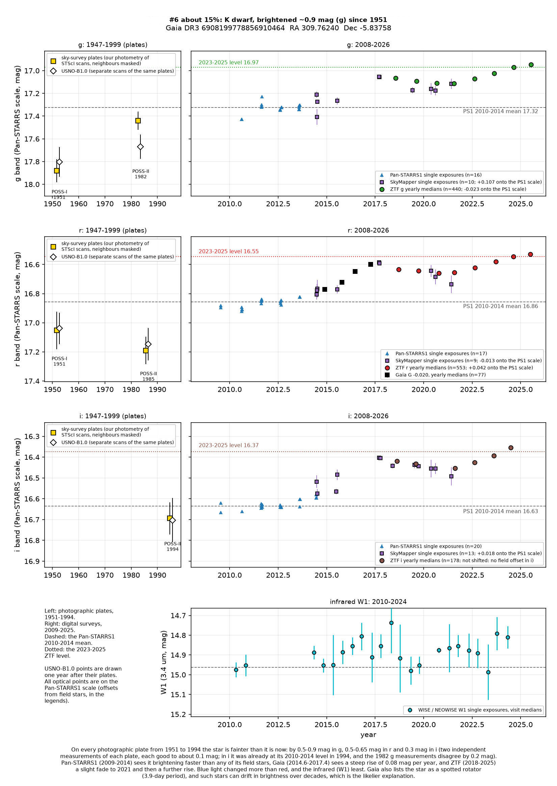
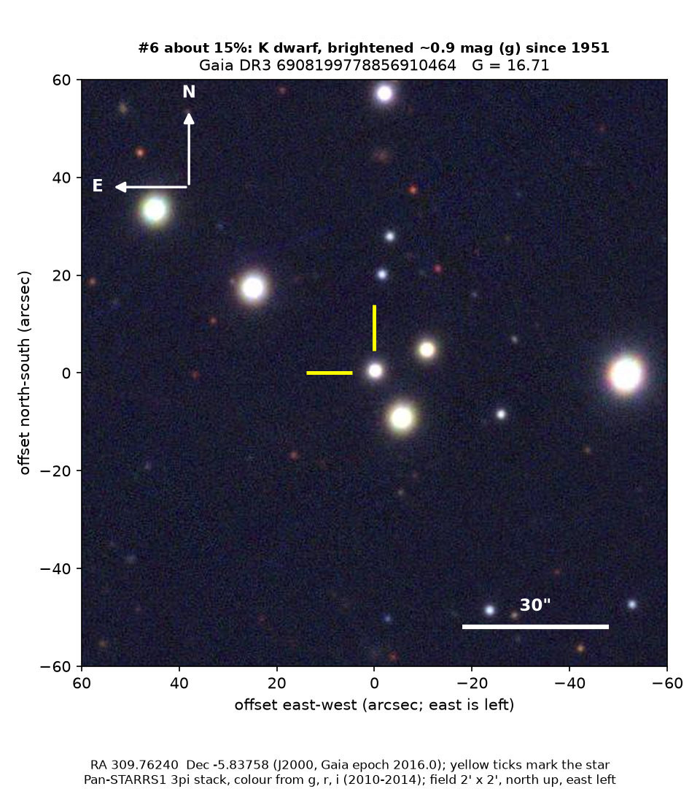

Professor of Mathematics
Paata Ivanisvili
Department of Mathematics, University of California, Irvine

Candidate 6: an orange dwarf in Aquarius, brighter today than on any photographic plate since 1951
Why this estimate. The brightening is certainly real: two separate measurements of each photographic plate agree, and Pan-STARRS1, Gaia, SkyMapper and ZTF all see the rise when it is measured against field stars. But Gaia lists the star as a spotted rotator with a 3.9-day period, its hydrogen line is slightly filled in, and ZTF sees extra night-to-night scatter, so it is an active star, probably a close binary. A long starspot cycle explains a change of this size more simply than dust does.
How to read the pictures. The finder chart shows a patch of sky two arcminutes across, about a fifteenth of the Moon’s width, with north up and east to the left. The star sits between the two yellow ticks, and the white bar is 30 arcseconds long. On a light curve the vertical axis is magnitude, a brightness scale on which larger numbers mean fainter stars, and it is drawn so that down means fainter. Each survey uses slightly different filters, so each is compared with its own normal level.

What changed. The star is an orange dwarf in Aquarius, 27 degrees below the plane of the Milky Way, in a region where most stars are old. Gaia estimates its temperature at about 5,300 K and finds a low content of heavy elements, about a tenth of the Sun’s, though that is a rough figure for a star this faint. It is about 1.2 to 1.8 kiloparsecs (4,000 to 6,000 light-years) away and 500 to 800 parsecs below the Galactic plane, and no other Gaia star lies within 10 arcseconds. On every photographic plate from 1951 to 1994 the star is fainter than it is today: by 0.5 to 0.9 magnitudes in blue-green light, 0.5 to 0.65 in red light and 0.3 in the near infrared. Two separate measurements of each plate agree, except on the 1982 blue plate, where they differ by 0.2 magnitudes. From 2009 to 2014 Pan-STARRS1 sees the star brightening faster than any of 13 to 15 field stars measured in the same way. From late 2014 to mid-2017 Gaia sees a steep rise of 0.08 magnitudes a year, and SkyMapper agrees. From 2018 to 2025 ZTF sees a slight fade until 2021, followed by a further rise. Between the Pan-STARRS1 and ZTF measurements the star brightened by 0.36 magnitudes in green light and 0.33 in red, relative to 15 field stars of similar colour, which themselves changed by at most 0.05 magnitudes. Blue light changed more than red, and the infrared, at 3.4 microns, changed least, by about 0.1 magnitudes.
Why it might matter. A rise of almost a magnitude in blue-green light over 70 years is large for an ordinary dwarf star, and it is the same kind of change as in candidate 4. The low estimate concerns the cause, not whether the star got brighter. Gaia’s rotation analysis found that the star spins once every 3.9 days and carries large dark spots, so its brightness varies by about 0.05 magnitudes as they rotate in and out of view. ZTF’s night-to-night scatter is 1.3 times what its measurement errors would predict, against 1.0 for field stars, and the hydrogen absorption line is slightly filled in, as in other spotted stars. If the star is as old as its low heavy-element content and its height below the plane suggest, then spinning this fast means it is most likely a close binary whose two stars are locked to each other’s orbit. Such stars are known to drift by several tenths of a magnitude over decades as their magnetic activity waxes and wanes. In a comparison sample of stars that Gaia flags as spotted or active, a few per cent changed by half a magnitude or more over the past decade, and among 176 rotating stars detected by Gaia this star’s change in green light is the third largest. The ZTF fade and the renewed rise also look more like a cycle than a one-way change.
SIMBAD has only the Gaia entry, from Gaia’s rotation catalogue, and the variable-star index only copies that result: type ROT, period 3.908 days. Gaia alerts, published variable-star lists, X-ray and ultraviolet catalogues, and arXiv show nothing. Two brighter stars 11 arcseconds away are unrelated, because their motions across the sky differ by more than 6 milliarcseconds a year. They do, however, sit inside the ring used to measure the plate background. Field stars with a similar bright neighbour show no offset, to within 0.05 magnitudes, and measuring the plates again with the neighbours masked makes the old-plate offsets 0.05 to 0.15 magnitudes smaller. Those masked values are the ones used here.
- Star
- Gaia DR3 6908199778856910464, an orange K dwarf
- Location
- RA 309.76240°, Dec −5.83758° (J2000), in Aquarius, 27 degrees below the plane of the Milky Way
- Distance
- about 1.2 to 1.8 kiloparsecs (4,000 to 6,000 light-years); the two Gaia estimates differ by about 50 per cent
- Brightness
- Gaia G = 16.71
- Probability
- This candidate is unconfirmed. The percentage under the title is an estimate of the chance that it is a real, previously unrecorded case of the kind described. The estimate has not been checked by outside experts. See the introduction to all twelve candidates.
- Caveat
- A starspot cycle is the likelier explanation, and dust the less likely one. Each plate is good to about 0.1 magnitudes, there are only two plates per colour, and the two measurements disagree on the 1982 blue plate. In near-infrared light the star was already at its 2010 to 2014 level in 1994, so in red light most of the change may be recent. No spectrum of the star exists in the public archives that were checked. A change of half a magnitude is hard to see by eye on the plates, so there is no before-and-after picture.
